library(tidyverse)
library(cowplot)
library(fishualize)
library(brms)
library(tidybayes)
library(patchwork)12 Bayesian Approaches to Testing a Point (“Null”) Hypothesis
Suppose that you have collected some data, and now you want to answer the question, Is there a non-zero effect or not? Is the coin fair or not? Is there better-than-chance accuracy or not? Is there a difference between groups or not? In the previous chapter, [Kruschke] argued that answering this type of question via null hypothesis significance testing (NHST) has deep problems. This chapter describes Bayesian approaches to the question. (Kruschke, 2015, p 335)
12.1 The estimation approach
Throughout this book, we have used Bayesian inference to derive a posterior distribution over a parameter of interest, such as the bias \(\theta\) of a coin. We can then use the posterior distribution to discern the credible values of the parameter. If the null value is far from the credible values, then we reject the null value as not credible. But if all the credible values are virtually equivalent to the null value, then we can accept the null value. (p. 336)
12.1.1 Region of practical equivalence
Load the primary packages for this chapter.
Kruschke began: “A region of practical equivalence (ROPE) indicates a small range of parameter values that are considered to be practically equivalent to the null value for purposes of the particular application” (p. 336, emphasis in the original)
Before we get to plotting, let’s talk about themes and color. For the plots in this chapter, we’ll take our color palette from the fishualize package (Schiettekatte et al., 2022), which provides a range of color palettes based on fish species. Our palette will be "Ostorhinchus_angustatus", which is based on Ostorhinchus angustatus.
scales::show_col(fish(n = 5, option = "Ostorhinchus_angustatus"))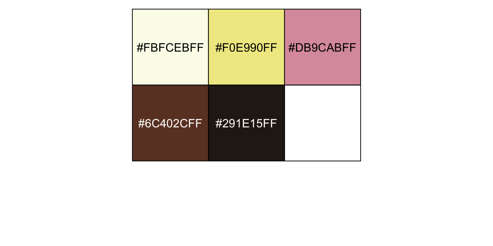
We’ll base our overall global plot theme on cowplot::theme_cowplot(), and use theme() to make a few color changes based on "Ostorhinchus_angustatus".
oa <- fish(n = 5, option = "Ostorhinchus_angustatus")
theme_set(
theme_cowplot() +
theme(panel.background = element_rect(color = oa[1], fill = oa[1]),
strip.background = element_rect(fill = oa[3]),
strip.text = element_text(color = oa[5]))
)
oa[1] "#FBFCEBFF" "#F0E990FF" "#DB9CABFF" "#6C402CFF" "#291E15FF"You can undo the above with ggplot2::theme_set(ggplot2::theme_grey()). Here’s a plot of Kruschke’s initial coin flip ROPE.
tibble(xmin = 0.45,
xmax = 0.55) |>
ggplot() +
geom_rect(aes(xmin = xmin, xmax = xmax,
ymin = -Inf, ymax = Inf),
color = "transparent", fill = oa[2]) +
annotate(geom = "text", x = 0.5, y = 0.5,
label = "ROPE", color = oa[5]) +
scale_x_continuous(breaks = 0:5 / 5, expand = expansion(mult = 0), limits = c(0, 1)) +
scale_y_continuous(NULL, breaks = NULL) +
labs(x = expression(theta),
title = "Kruschke's coin flip ROPE")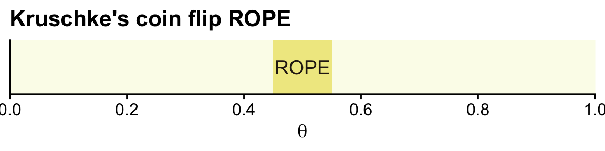
In the first example (p. 336), we have \(z = 325\) heads out of \(N = 500\) coin flips. To visualize the analysis, we’ll need the dbern() function.
dbern <- function(x, z = NULL, n = NULL) {
x^z * (1 - x)^(n - z)
}Now we’ll follow the typical steps to combine the prior, which is flat in this case, and the likelihood to get the posterior.
# Data summaries
n <- 500; z <- 325 # (i.e., data)
d <- tibble(theta = seq(from = 0, to = 1, length.out = 1e3)) |> # (i.e., theta)
# Recall Beta(1, 1) is flat
mutate(prior = dbeta(theta, shape1 = 1, shape2 = 1), # (i.e., p(theta))
likelihood = dbern(x = theta, z = z, n = n)) |> # (i.e., p(D | theta))
mutate(posterior = likelihood * prior / sum(prior * likelihood)) # (i.e., p(theta | D))
glimpse(d)Rows: 1,000
Columns: 4
$ theta <dbl> 0.000000000, 0.001001001, 0.002002002, 0.003003003, 0.004004004, 0.005005005, 0.006006006, 0.007007007, 0.008…
$ prior <dbl> 1, 1, 1, 1, 1, 1, 1, 1, 1, 1, 1, 1, 1, 1, 1, 1, 1, 1, 1, 1, 1, 1, 1, 1, 1, 1, 1, 1, 1, 1, 1, 1, 1, 1, 1, 1, 1…
$ likelihood <dbl> 0, 0, 0, 0, 0, 0, 0, 0, 0, 0, 0, 0, 0, 0, 0, 0, 0, 0, 0, 0, 0, 0, 0, 0, 0, 0, 0, 0, 0, 0, 0, 0, 0, 0, 0, 0, 0…
$ posterior <dbl> 0, 0, 0, 0, 0, 0, 0, 0, 0, 0, 0, 0, 0, 0, 0, 0, 0, 0, 0, 0, 0, 0, 0, 0, 0, 0, 0, 0, 0, 0, 0, 0, 0, 0, 0, 0, 0…Now we can plot the results.
ggplot(data = d) +
geom_rect(xmin = 0.45, xmax = 0.55,
ymin = -Inf, ymax = Inf,
color = "transparent", fill = oa[2]) +
geom_area(aes(x = theta, y = posterior),
fill = oa[4]) +
annotate(geom = "text", x = 0.5, y = 0.01,
label = "ROPE", color = oa[5]) +
scale_x_continuous(breaks = 0:5 / 5, expand = expansion(mult = 0), limits = c(0, 1)) +
scale_y_continuous(NULL, breaks = NULL, expand = expansion(mult = c(0, 0.05))) +
labs(x = expression(theta),
title = "Nope, that density ain't in that ROPE.",) 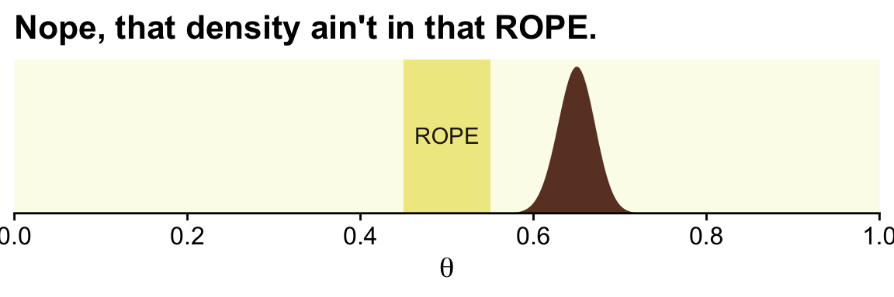
With the formula by \(\operatorname{Beta}(\theta \mid z + \alpha, N - z + \beta)\), we can analytically compute the Beta parameters for the posterior.
(alpha <- z + 1)[1] 326(beta <- n - z + 1)[1] 176With the hdi_of_icdf() function, we’ll compute the HDIs.
hdi_of_icdf <- function(name, width = 0.95, tol = 1e-8, ... ) {
incredible_mass <- 1.0 - width
interval_width <- function(low_tail_prob, name, width, ...) {
name(width + low_tail_prob, ...) - name(low_tail_prob, ...)
}
opt_info <- optimize(interval_width, c(0, incredible_mass),
name = name, width = width,
tol = tol, ...)
hdi_lower_tail_prob <- opt_info$minimum
c(ll = name(hdi_lower_tail_prob, ...),
ul = name(width + hdi_lower_tail_prob, ...))
}Compute those HDIs and save them as h.
h <- hdi_of_icdf(name = qbeta,
shape1 = alpha,
shape2 = beta)
h ll ul
0.6075644 0.6909070 Now let’s remake the plot from above, this time with the analytically-derived HDI values.
tibble(theta = seq(from = 0, to = 1, length.out = 1e3)) |>
mutate(density = dbeta(theta, shape1 = alpha, shape2 = beta)) |>
ggplot() +
geom_rect(xmin = 0.45, xmax = 0.55,
ymin = -Inf, ymax = Inf,
color = "transparent", fill = oa[2]) +
geom_area(aes(x = theta, y = density),
fill = oa[4]) +
geom_segment(x = h[1], xend = h[2],
y = 0.1, yend = 0.1,
color = oa[3], linewidth = 1) +
annotate(geom = "text", x = 0.5, y = 17.5,
label = "ROPE", color = oa[5]) +
annotate(geom = "text", x = 0.65, y = 4, label = "95%\nHDI", color = oa[1]) +
scale_x_continuous(breaks = 0:5 / 5, expand = expansion(mult = 0), limits = c(0, 1)) +
scale_y_continuous(NULL, breaks = NULL, expand = expansion(mult = c(0, 0.05))) +
labs(x = expression(theta),
title = "That `hdi_of_icdf()` function really came through, for us.")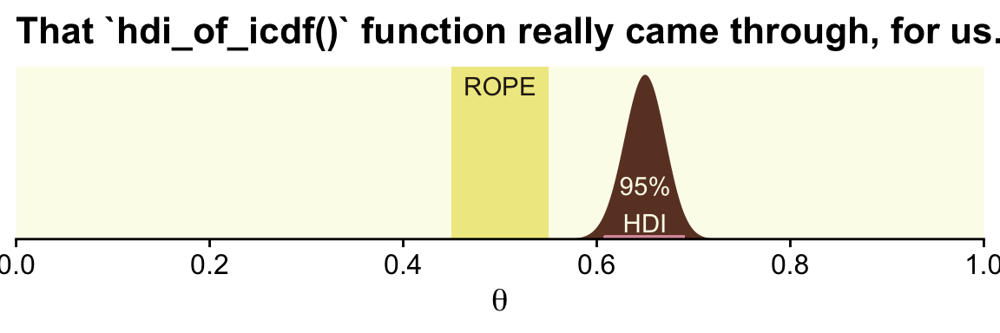
In his second example (p. 337), Kruschke considered \(z = 490\) heads out of \(N = 1{,}000\) flips.
# We need these to compute the likelihood
n <- 1000
z <- 490 # (i.e., the data)
tibble(theta = seq(from = 0, to = 1, length.out = 1e3)) |> # (i.e., theta)
mutate(prior = dbeta(theta, shape1 = 1, shape2 = 1), # (i.e., p(theta))
likelihood = dbern(x = theta, z = z, n = n)) |> # (i.e., p(D | theta))
mutate(posterior = (likelihood * prior) / sum(likelihood * prior)) |> # (i.e., p(theta | D))
ggplot() +
geom_rect(xmin = 0.45, xmax = 0.55,
ymin = -Inf, ymax = Inf,
color = "transparent", fill = oa[2]) +
geom_area(aes(x = theta, y = posterior),
fill = oa[4]) +
scale_x_continuous(breaks = 0:5 / 5, expand = expansion(mult = 0), limits = c(0, 1)) +
scale_y_continuous(NULL, breaks = NULL, expand = expansion(mult = c(0, 0.05))) +
labs(x = expression(theta),
title = "This posterior sits right within the ROPE.")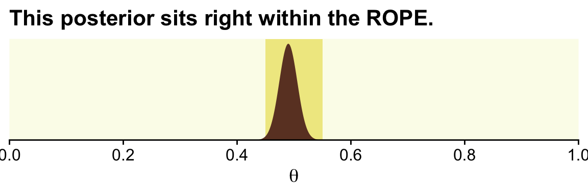
Here are the new HDIs.
hdi_of_icdf(name = qbeta,
shape1 = z + 1,
shape2 = n - z + 1) ll ul
0.4590949 0.5209562 Further down the section, Kruschke offered some perspective on the ROPE approach.
The ROPE limits, by definition, cannot be uniquely “correct,” but instead are established by practical aims, bearing in mind that wider ROPEs yield more decisions to accept the ROPEd value and fewer decision to reject the ROPEd value. In many situations, the exact limit of the ROPE can be left indeterminate or tacit, so that the audience of the analysis can use whatever ROPE is appropriate at the time, as competing theories and measuring devices evolve. When the HDI is far from the ROPEd value, the exact ROPE is inconsequential because the ROPEd value would be rejected for any reasonable ROPE. When the HDI is very narrow and overlaps the target value, the HDI might again fall within any reasonable ROPE, again rendering the exact ROPE inconsequential. When, however, the HDI is only moderately narrow and near the target value, the analysis can report how much of the posterior falls within a ROPE as a function of different ROPE widths…
It is important to be clear that any discrete decision about rejecting or accepting a null value does not exhaustively capture our knowledge about the parameter value. Our knowledge about the parameter value is described by the full posterior distribution. When making a binary decision, we have merely compressed all that rich detail into a single bit of information. The broader goal of Bayesian analysis is conveying an informative summary of the posterior, and where the value of interest falls within that posterior. Reporting the limits of an HDI region is more informative than reporting the declaration of a reject/accept decision. By reporting the HDI and other summary information about the posterior, different readers can apply different ROPEs to decide for themselves whether a parameter is practically equivalent to a null value. The decision procedure is separate from the Bayesian inference. The Bayesian part of the analysis is deriving the posterior distribution. The decision procedure uses the posterior distribution, but does not itself use Bayes’ rule. (pp. 338–339, emphasis in the original)
Full disclosure: I’m not a fan of the ROPE method. Though we’re following along with the text and covering it, here, I will deemphasize it in later sections.
Kruschke then went on to compare the ROPE with frequentist equivalence tests. This is a part of the literature I have not waded into, yet. It appears psychologist Daniël Lakens and colleagues gave written a bit in the topic, recently. Interested readers might start with Lakens et al. (2020), Lakens et al. (2018), or Lakens & Delacre (2018).
12.1.2 Some examples
Kruschke referenced an analysis from way back in Chapter 9. We’ll need to re-fit the model. First we import data.
my_data <- read_csv("data.R/BattingAverage.csv")
glimpse(my_data)Rows: 948
Columns: 6
$ Player <chr> "Fernando Abad", "Bobby Abreu", "Tony Abreu", "Dustin Ackley", "Matt Adams", "Nathan Adcock", "Jeremy Affel…
$ PriPos <chr> "Pitcher", "Left Field", "2nd Base", "2nd Base", "1st Base", "Pitcher", "Pitcher", "1st Base", "1st Base", …
$ Hits <dbl> 1, 53, 18, 137, 21, 0, 0, 2, 150, 167, 0, 128, 66, 3, 1, 81, 180, 36, 150, 0, 81, 86, 0, 9, 21, 89, 1, 128,…
$ AtBats <dbl> 7, 219, 70, 607, 86, 1, 1, 20, 549, 576, 1, 525, 275, 12, 8, 384, 629, 158, 520, 3, 347, 319, 3, 63, 94, 36…
$ PlayerNumber <dbl> 1, 2, 3, 4, 5, 6, 7, 8, 9, 10, 11, 12, 13, 14, 15, 16, 17, 18, 19, 20, 21, 22, 23, 24, 25, 26, 27, 28, 29, …
$ PriPosNumber <dbl> 1, 7, 4, 4, 3, 1, 1, 3, 3, 4, 1, 5, 4, 2, 7, 4, 6, 8, 9, 1, 2, 5, 1, 1, 7, 2, 1, 6, 1, 6, 1, 1, 9, 2, 1, 2,…Fit the model and retain its original name, fit9.2.
fit9.2 <- brm(
data = my_data,
family = binomial(link = logit),
Hits | trials(AtBats) ~ 1 + (1 | PriPos) + (1 | PriPos:Player),
prior = c(prior(normal(0, 1.5), class = Intercept),
prior(normal(0, 1), class = sd)),
iter = 3500, warmup = 500, chains = 3, cores = 3,
control = list(adapt_delta = 0.99),
seed = 9,
file = "fits/fit09.02")Let’s use the coef() function with summary = FALSE to pull the relevant posterior draws.
c <- coef(fit9.2, summary = F)$PriPos |>
as_tibble()
str(c)tibble [9,000 × 9] (S3: tbl_df/tbl/data.frame)
$ 1st Base.Intercept : num [1:9000] -1.07 -1.1 -1.08 -1.08 -1.07 ...
$ 2nd Base.Intercept : num [1:9000] -1.1 -1.1 -1.1 -1.1 -1.08 ...
$ 3rd Base.Intercept : num [1:9000] -1.02 -1.03 -1.03 -1.06 -1.08 ...
$ Catcher.Intercept : num [1:9000] -1.19 -1.15 -1.14 -1.14 -1.14 ...
$ Center Field.Intercept: num [1:9000] -1.04 -1.04 -1.01 -1.03 -1.07 ...
$ Left Field.Intercept : num [1:9000] -1.08 -1.08 -1.02 -1.04 -1.08 ...
$ Pitcher.Intercept : num [1:9000] -1.92 -1.84 -1.96 -1.9 -1.84 ...
$ Right Field.Intercept : num [1:9000] -1.05 -1.07 -1.04 -1.01 -1.05 ...
$ Shortstop.Intercept : num [1:9000] -1.13 -1.16 -1.09 -1.12 -1.14 ...As we pointed out in Chapter 9, keep in mind that coef() returns the values in the logit scale when used for logistic regression models. So we’ll have to use plogis() to convert the estimates to the probability metric. We can make the difference distributions after we’ve converted the estimates.
c_small <- c |>
mutate_all(.funs = plogis) |>
transmute(`Pitcher - Catcher` = Pitcher.Intercept - Catcher.Intercept,
`Catcher - 1st Base` = Catcher.Intercept - `1st Base.Intercept`)
head(c_small)# A tibble: 6 × 2
`Pitcher - Catcher` `Catcher - 1st Base`
<dbl> <dbl>
1 -0.106 -0.0212
2 -0.103 -0.00990
3 -0.120 -0.00980
4 -0.112 -0.0118
5 -0.105 -0.0125
6 -0.112 -0.0193 After a little wrangling, we’ll be ready to re-plot the relevant parts of Figure 9.14.
c_small |>
pivot_longer(cols = everything()) |>
mutate(name = factor(name, levels = c("Pitcher - Catcher", "Catcher - 1st Base"))) |>
ggplot(aes(x = value)) +
geom_rect(xmin = -0.05, xmax = 0.05,
ymin = -Inf, ymax = Inf,
color = "transparent", fill = oa[2]) +
stat_histinterval(point_interval = mode_hdi, .width = 0.95,
breaks = 20, colour = oa[3], fill = oa[4],
normalize = "panels") +
scale_y_continuous(NULL, breaks = NULL) +
labs(x = expression(theta),
title = "The ROPE ranges from −0.05 to +0.05") +
coord_cartesian(xlim = c(-0.125, 0.125)) +
theme(legend.position = "none") +
facet_wrap(~ name, scales = "free")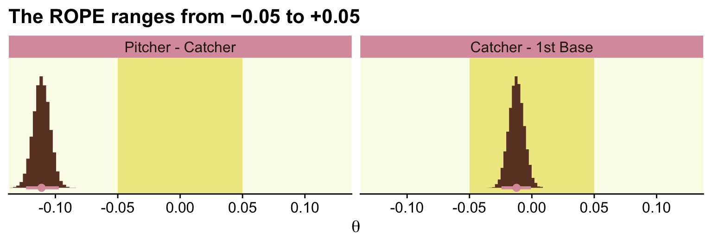
In order to re-plot part of Figure 9.15, we’ll need to employ fitted() to snatch the player-specific posteriors.
# This will make life easier
name_list <- c("ShinSoo Choo", "Ichiro Suzuki")
# Define the data we'd like to feed into `fitted()`
nd <- my_data |>
filter(Player %in% c(name_list)) |>
# These last two lines aren't typically necessary, but they allow us to
# arrange the rows in the same order we find the names in Figures 9.15 and 9.16
mutate(Player = factor(Player, levels = c(name_list))) |>
arrange(Player)
f <- fitted(fit9.2,
newdata = nd,
scale = "linear",
summary = FALSE) |>
as_tibble() |>
mutate_all(.funs = plogis) |>
set_names(name_list) |>
# In this last section, we make our difference distributions
mutate(`ShinSoo Choo - Ichiro Suzuki` = `ShinSoo Choo` - `Ichiro Suzuki`)
glimpse(f)Rows: 9,000
Columns: 3
$ `ShinSoo Choo` <dbl> 0.2494368, 0.2782929, 0.2647410, 0.2658125, 0.2519389, 0.2697741, 0.2834474, 0.2668803, 0…
$ `Ichiro Suzuki` <dbl> 0.2749976, 0.2744152, 0.2745830, 0.2712735, 0.2548220, 0.2560899, 0.2800062, 0.2762012, 0…
$ `ShinSoo Choo - Ichiro Suzuki` <dbl> -2.556087e-02, 3.877648e-03, -9.841991e-03, -5.460970e-03, -2.883073e-03, 1.368424e-02, 3…Now we’re ready to go.
f |>
ggplot() +
geom_rect(xmin = -0.05, xmax = 0.05,
ymin = -Inf, ymax = Inf,
color = "transparent", fill = oa[2]) +
stat_histinterval(aes(x = `ShinSoo Choo - Ichiro Suzuki`, y = 0),
point_interval = mode_hdi, .width = 0.95,
breaks = 40, color = oa[3], fill = oa[4]) +
scale_y_continuous(NULL, breaks = NULL) +
labs(x = expression(theta),
title = "ShinSoo Choo - Ichiro Suzuki",) +
coord_cartesian(xlim = c(-0.125, 0.125))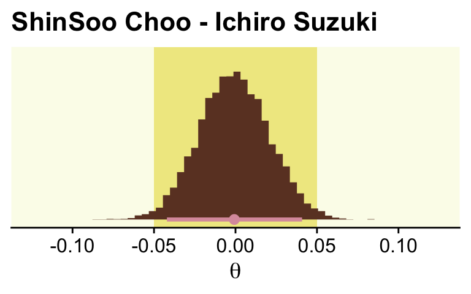
12.1.4 Why HDI and not equal-tailed interval?
Though Kruschke told us Figure 12.2 was of a gamma distribution, he didn’t tell us the parameters for that particular gamma. After playing around for a bit, it appeared dgamma(x, 2, 0.2) worked pretty well.
tibble(x = seq(from = 0, to = 40, by = 0.1)) |>
ggplot(aes(x = x, y = dgamma(x, shape = 2, rate = 0.2))) +
geom_area(fill = oa[4]) +
scale_x_continuous(expand = expansion(mult = c(0, 0.05))) +
scale_y_continuous("density", expand = expansion(mult = c(0, 0.05))) +
ggtitle("Gamma(2, 0.2)") +
coord_cartesian(xlim = c(0, 35))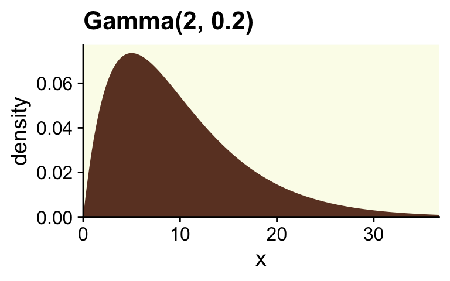
If you want to get the quantile-based intervals (i.e., the ETIs), you can plug in the desired quantiles into the qgamma() function.
(ex <- qgamma(c(0.025, 0.975), shape = 2, rate = 0.2))[1] 1.211046 27.858217To analytically derive the gamma HDIs, we just use the good old hdi_of_icdf() function.
hx <- hdi_of_icdf(name = qgamma,
shape = 2,
rate = 0.2)
hx ll ul
0.2118165 23.8258411 Next you need to determine how high up to go on the y-axis. For the quantile-based intervals, the ETIs, you can use dgamma(). The trick is pump the output of qgamma() right into dgamma().
ey <- qgamma(c(0.025, 0.975), shape = 2, rate = 0.2) |>
dgamma(shape = 2, rate = 0.2)
ey[1] 0.038021620 0.004239155We follow the same basic principle to get the \(y\)-axis values for the HDIs.
hy <- hdi_of_icdf(name = qgamma, shape = 2, rate = 0.2) |>
dgamma(shape = 2, rate = 0.2)
hy ll ul
0.008121227 0.008121233 Now we’ve computed all those values, we can collect them into a tibble with the necessary coordinates to make the ETI and HDI lines in our plot.
lines <- tibble(interval = rep(c("eti", "hdi"), each = 4),
x = c(ex, hx) |> rep(each = 2),
y = c(ey[1], 0.0003, 0.0003, ey[2], 0, hy, 0))
lines# A tibble: 8 × 3
interval x y
<chr> <dbl> <dbl>
1 eti 1.21 0.0380
2 eti 1.21 0.0003
3 eti 27.9 0.0003
4 eti 27.9 0.00424
5 hdi 0.212 0
6 hdi 0.212 0.00812
7 hdi 23.8 0.00812
8 hdi 23.8 0 Technically, those second and third y-values should be zero. I’ve set them a touch higher so they don’t get obscured by the \(x\)-axis in the plot. Anyway, we’re finally ready to plot a more complete version of Figure 12.2.
# For the annotation
d_text <- tibble(x = c(15, 12),
y = c(0.004, 0.012),
label = c("95% ETI", "95% HDI"),
interval = c("eti", "hdi"))
# Plot!
tibble(x = seq(from = 0, to = 40, by = 0.1)) |>
mutate(density = dgamma(x, 2, 0.2)) |>
ggplot(aes(x = x)) +
geom_area(aes(y = density),
fill = oa[4]) +
geom_path(data = lines,
aes(y = y, color = interval),
linewidth = 1) +
geom_text(data = d_text,
aes(y = y, label = label, color = interval)) +
scale_color_manual(values = oa[c(5, 1)]) +
scale_x_continuous("Parameter Value", expand = expansion(mult = c(0, 0.05))) +
scale_y_continuous(NULL, breaks = NULL, expand = expansion(mult = c(0, 0.05))) +
coord_cartesian(xlim = c(0, 35)) +
theme(legend.position = "none")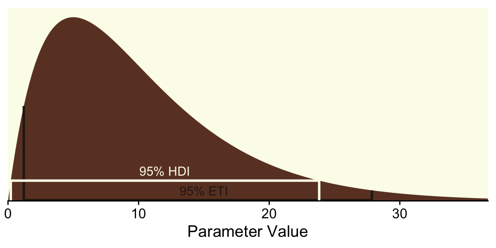
To repeat, ETIs are the only types of intervals available directly by the brms package. When using the default print() or summary() output for a brm() model, the 95% ETIs are displayed in the ‘l-95% CI’ and ‘u-95% CI’ columns.
print(fit9.2) Family: binomial
Links: mu = logit
Formula: Hits | trials(AtBats) ~ 1 + (1 | PriPos) + (1 | PriPos:Player)
Data: my_data (Number of observations: 948)
Draws: 3 chains, each with iter = 3500; warmup = 500; thin = 1;
total post-warmup draws = 9000
Multilevel Hyperparameters:
~PriPos (Number of levels: 9)
Estimate Est.Error l-95% CI u-95% CI Rhat Bulk_ESS Tail_ESS
sd(Intercept) 0.33 0.10 0.19 0.59 1.00 2786 4735
~PriPos:Player (Number of levels: 948)
Estimate Est.Error l-95% CI u-95% CI Rhat Bulk_ESS Tail_ESS
sd(Intercept) 0.14 0.01 0.12 0.15 1.00 4243 6049
Regression Coefficients:
Estimate Est.Error l-95% CI u-95% CI Rhat Bulk_ESS Tail_ESS
Intercept -1.16 0.12 -1.39 -0.93 1.00 783 1842
Draws were sampled using sampling(NUTS). For each parameter, Bulk_ESS
and Tail_ESS are effective sample size measures, and Rhat is the potential
scale reduction factor on split chains (at convergence, Rhat = 1).In the output of most other brms functions, the 95% ETIs appear in the Q2.5 and Q97.5 columns. Take fitted(), for example.
fitted(fit9.2,
newdata = nd,
scale = "linear") Estimate Est.Error Q2.5 Q97.5
[1,] -0.9704124 0.07749284 -1.123504 -0.8184636
[2,] -0.9667891 0.07544337 -1.115997 -0.8199669But as we just did, above, you can always use the convenience functions from the tidybayes package (e.g., mean_hdi()) to get HDIs from a brms fit.
fitted(fit9.2,
newdata = nd,
scale = "linear",
summary = FALSE) |>
as_tibble() |>
pivot_longer(cols = everything()) |>
group_by(name) |>
mean_hdi(value)# A tibble: 2 × 7
name value .lower .upper .width .point .interval
<chr> <dbl> <dbl> <dbl> <dbl> <chr> <chr>
1 V1 -0.970 -1.12 -0.820 0.95 mean hdi
2 V2 -0.967 -1.11 -0.815 0.95 mean hdi As you may have gathered, Kruschke clearly prefers using HDIs over ETIs. His preference isn’t without controversy. If you’d like to explore the topic further, here are links to discussion threads on HDIs in [the link to the corresponding thread in the Stan forum and the posterior GitHub repo.
12.2 The model-comparison approach
Recall that the motivating issue for this chapter is the question, Is the null value of a parameter credible? The previous section answered the question in terms of parameter estimation. In that approach, we started with a possibly informed prior distribution and examined the posterior distribution.
In this section we take a different approach. Some researchers prefer instead to pose the question in terms of model comparison. In this framing of the question, the focus is not on estimating the magnitude of the parameter. Instead, the focus is on deciding which of two hypothetical prior distributions is least incredible. One prior expresses the hypothesis that the parameter value is exactly the null value. The alternative prior expresses the hypothesis that the parameter could be any value, according to some form of broad distribution. (p. 344)
12.2.1 Is a coin fair or not?
Some (e.g., Lee & Webb, 2005; Zhu & Lu, 2004) have argued the Haldane prior is superior to the uniform \(\operatorname{Beta}(1, 1)\) when choosing an uninformative prior for \(\theta\). The Haldane, recall, is \(\operatorname{Beta}(\epsilon, \epsilon)\), where \(\epsilon\) is some small value approaching zero (e.g., 0.01). We’ll use our typical steps with the grid approximation to compute the data for the left column of Figure 12.3 (i.e., the column based on the Haldane prior).
# We need these to compute the likelihood
n <- 24
z <- 7
epsilon <- 0.01
d <- tibble(theta = seq(from = 0, to = 1, length.out = 1000)) |>
mutate(prior = dbeta(x = theta, shape1 = epsilon, shape2 = epsilon),
likelihood = dbern(x = theta, z = z, n = n)) |>
# We have to slice off the first and last values because they go to infinity on the prior,
# which creates problems when computing the denominator `sum(likelihood * prior)` (i.e., p(D))
slice(2:999) |>
mutate(posterior = likelihood * prior / sum(likelihood * prior))
head(d)# A tibble: 6 × 4
theta prior likelihood posterior
<dbl> <dbl> <dbl> <dbl>
1 0.00100 4.67 9.90e-22 1.61e-15
2 0.00200 2.35 1.25e-19 1.02e-13
3 0.00300 1.58 2.09e-18 1.15e-12
4 0.00400 1.19 1.54e-17 6.39e-12
5 0.00501 0.952 7.22e-17 2.40e-11
6 0.00601 0.796 2.54e-16 7.07e-11Here’s the left column of Figure 12.3.
p1 <- d |>
ggplot(aes(x = theta, y = prior)) +
geom_area(fill = oa[4]) +
annotate(geom = "text", x = 0.1, y = 4,
label = expression(epsilon == 0.01),
color = oa[5], size = 3.5) +
labs(y = expression("Beta"*(theta*"|"*epsilon*", "*epsilon)),
title = "Prior (beta)") +
coord_cartesian(ylim = c(0, 5))
p2 <- d |>
ggplot(aes(x = theta, y = likelihood)) +
geom_area(fill = oa[4]) +
labs(y = expression(p(D*"|"*theta)),
title = "Likelihood (Bernoulli)")
p3 <- d |>
ggplot(aes(x = theta, y = posterior)) +
geom_area(fill = oa[4]) +
labs(y = expression("Beta"*(theta*"|"*7.01*", "*17.01)),
title = "Posterior (beta)")
(p1 / p2 / p3) &
scale_x_continuous(expression(theta), breaks = 0:5 / 5,
expand = expansion(mult = 0), limits = c(0, 1)) &
scale_y_continuous(breaks = NULL, expand = expansion(mult = c(0, 0.05))) &
theme(panel.grid = element_blank())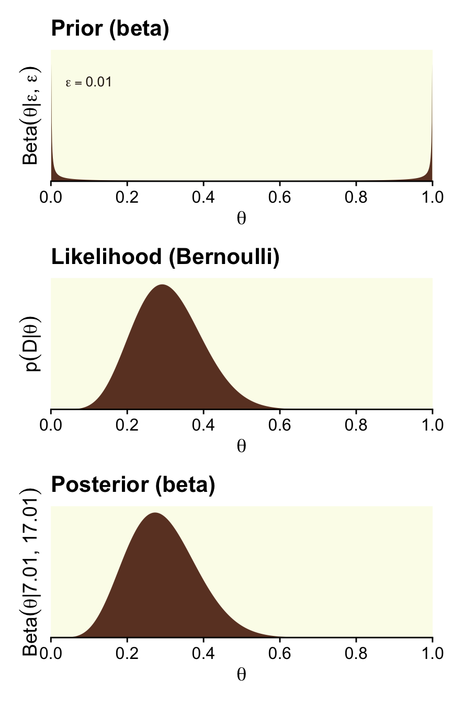
We can calculate the beta parameters for the posterior using the formula \(\operatorname{Beta}(\theta \mid z + \alpha, N - z + \beta)\).
# Alpha
z + epsilon[1] 7.01# Beta
n - z + epsilon[1] 17.01We need updated data for the right column, based on the \(\operatorname{Beta}(2, 4)\) prior.
alpha <- 2
beta <- 4
d <- tibble(theta = seq(from = 0, to = 1, length.out = 1000)) |>
mutate(prior = dbeta(x = theta, shape1 = alpha, shape2 = beta),
likelihood = dbern(x = theta, z = z, n = n)) |>
# No need to `slice(2:999)` this time
mutate(posterior = likelihood * prior / sum(likelihood * prior))
head(d)# A tibble: 6 × 4
theta prior likelihood posterior
<dbl> <dbl> <dbl> <dbl>
1 0 0 0 0
2 0.00100 0.0200 9.90e-22 8.91e-20
3 0.00200 0.0398 1.25e-19 2.24e-17
4 0.00300 0.0595 2.09e-18 5.62e-16
5 0.00400 0.0791 1.54e-17 5.50e-15
6 0.00501 0.0986 7.22e-17 3.21e-14Now here’s the right column of Figure 12.3.
p1 <- d |>
ggplot(aes(x = theta, y = prior)) +
geom_area(fill = oa[4]) +
labs(y = expression("Beta"*(theta*"|"*2*", "*4)),
title = "Prior (beta)") +
coord_cartesian(ylim = c(0, 5))
p2 <- d |>
ggplot(aes(x = theta, y = likelihood)) +
geom_area(fill = oa[4]) +
labs(y = expression(p(D*"|"*theta)),
title = "Likelihood (Bernoulli)")
p3 <- d |>
ggplot(aes(x = theta, y = posterior)) +
geom_area(fill = oa[4]) +
labs(y = expression("Beta"*(theta*"|"*9*", "*21)),
title = "Posterior (beta)")
(p1 / p2 / p3) &
scale_x_continuous(expression(theta), breaks = 0:5 / 5,
expand = expansion(mult = 0), limits = c(0, 1)) &
scale_y_continuous(breaks = NULL, expand = expansion(mult = c(0, 0.05)))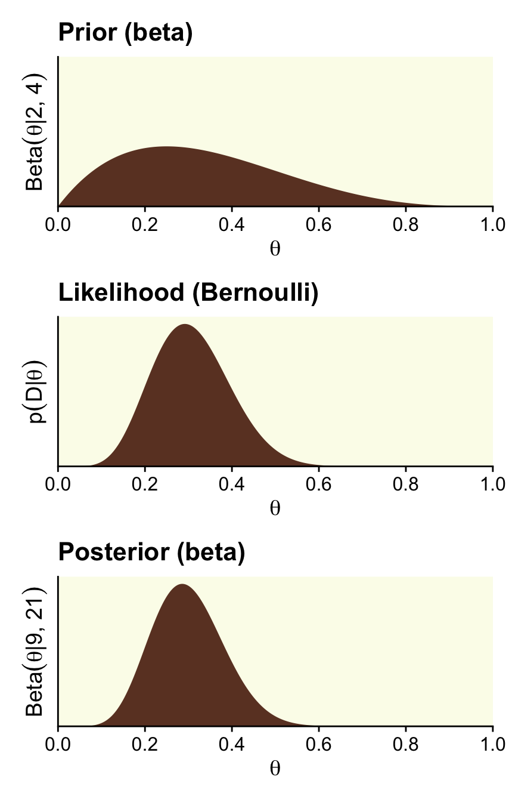
Here are those beta parameters for that posterior.
# Alpha
z + alpha[1] 9# Beta
n - z + beta[1] 21Following the formula for the null hypothesis (Equation 2.1, p. 344),
\[p(z, N \mid M_\text{null}) = \theta_\text{null}^z(1 - \theta_\text{null})^{(N - z)},\]
we can compute the probability of the data given the null hypothesis.
theta <- 0.5
(p_d_null <- theta ^ z * (1 - theta) ^ (n - z))[1] 5.960464e-08The formula for the marginal likelihood for the alternative hypothesis \(M_\text{alt}\) is
\[p(z, N \mid M_\text{alt}) = \frac{\operatorname{Beta}(z + \alpha_\text{alt}, N - z + \beta_\text{alt})}{\operatorname{Beta}(\alpha_\text{alt}, \beta_\text{alt})}.\]
We can make our own p_d() function to compute the probability of the data given alternative hypotheses. Here we’ll simplify the function a bit to extract z and n out of the environment.
p_d <- function(a, b) {
beta(z + a, n - z + b) / beta(a, b)
}With p_d_null and our p_d() function in hand, we can reproduce and extend the results in Kruschke’s Equation 12.4 (p. 345).
options(scipen = 999)
tibble(shape1 = c(2, 1, 0.1, 0.01, 0.001, 0.0001, 0.00001),
shape2 = c(4, 1, 0.1, 0.01, 0.001, 0.0001, 0.00001)) |>
mutate(p_d = p_d(a = shape1, b = shape2),
p_d_null = p_d_null) |>
mutate(bf = p_d / p_d_null) |>
# This just reduces the amount of significant digits in the output
mutate_all(.funs = round, digits = 6)# A tibble: 7 × 5
shape1 shape2 p_d p_d_null bf
<dbl> <dbl> <dbl> <dbl> <dbl>
1 2 4 0 0 3.72
2 1 1 0 0 1.94
3 0.1 0.1 0 0 0.421
4 0.01 0.01 0 0 0.0481
5 0.001 0.001 0 0 0.00488
6 0.0001 0.0001 0 0 0.000489
7 0.00001 0.00001 0 0 0.000049options(scipen = 0)Did you notice our use of options(scipen)? With the first line, we turned off scientific notation in the print output. We turned scientific notation back on with the second line. But back to the text,
for now, notice that when the alternative prior is uniform, with \(a_\text{alt} = b_\text{alt} = 1.000\), the Bayes’ factor shows a (small) preference for the alternative hypothesis, but when the alternative prior approximates the Haldane, the Bayes’ factor shows a strong preference for the null hypothesis. As the alternative prior gets closer to the Haldane limit, the Bayes’ factor changes by orders of magnitude. Thus, as we have seen before (e.g. Section 10.6, p. 292), the Bayes’ factor is very sensitive to the choice of prior distribution. (p. 345, emphasis added)
On page 346, Kruschke showed some of the 95% HDIs for the marginal distributions of the various \(M_\text{alt}\)s. We could compute those one at a time with hdi_of_icdf(). But why not work in bulk? Like we did in Section 10.6, let’s make a custom variant hdi_of_qbeta(), which will be more useful within the context of map2().
hdi_of_qbeta <- function(shape1, shape2) {
hdi_of_icdf(name = qbeta,
shape1 = shape1,
shape2 = shape2) |>
data.frame() |>
set_names("value") |>
mutate(level = c("ll", "ul")) |>
pivot_wider(names_from = level, values_from = value)
}Compute the HDIs.
tibble(shape1 = z + c(2, 1, 0.1, 0.01, 0.001, 0.0001, 0.00001),
shape2 = n - z + c(4, 1, 0.1, 0.01, 0.001, 0.0001, 0.00001)) |>
mutate(h = map2(shape1, shape2, hdi_of_qbeta)) |>
unnest(h) |>
mutate_at(vars(ends_with("l")), .funs = \(x) round(x, digits = 4))# A tibble: 7 × 4
shape1 shape2 ll ul
<dbl> <dbl> <dbl> <dbl>
1 9 21 0.145 0.462
2 8 18 0.141 0.483
3 7.1 17.1 0.124 0.472
4 7.01 17.0 0.122 0.471
5 7.00 17.0 0.122 0.471
6 7.00 17.0 0.122 0.471
7 7.00 17.0 0.122 0.471As Kruschke mused,
if we consider the posterior distribution instead of the Bayes’ factor, we see that the posterior distribution on \(\theta\) within the alternative model is only slightly affected by the prior… In all cases, the 95% HDI excludes the null value, although a wide ROPE might overlap the HDI. Thus, the explicit estimation of the bias parameter robustly indicates that the null value should be rejected, but perhaps only marginally. This contrasts with the Bayes’ factor, model-comparison approach, which rejected the null or accepted the null depending on the alternative prior.
Further,
of the Bayes’ factors in Equation 12.4, which is most appropriate? If your analysis is driven by the urge for a default, uninformed alternative prior, then the prior that best approximates the Haldane is most appropriate. Following from that, we should strongly prefer the null hypothesis to the Haldane alternative. While this is mathematically correct, it is meaningless for an applied setting because the Haldane alternative represents nothing remotely resembling a credible alternative hypothesis. The Haldane prior sets prior probabilities of virtually zero at all values of \(\theta\) except \(\theta = 0\) and \(\theta = 1\). There are very few applied settings where such a U-shaped prior represents a genuinely meaningful theory. (p. 346).
12.2.1.1 Bayes’ factor can accept null with poor precision
Here are the steps to make the left column of Figure 12.4 (i.e., the column based on very weak data and the Haldane prior).
# We need these to compute the likelihood
n <- 2; z <- 1
d <- tibble(theta = seq(from = 0, to = 1, length.out = 1000)) |>
mutate(prior = dbeta(x = theta, shape1 = epsilon, shape2 = epsilon),
likelihood = dbern(x = theta, z = z, n = n)) |>
# Like before, we have to slice off the first and last values because they go to infinity on the
# `prior`, which creates problems when computing the denominator `sum(likelihood * prior)` (i.e., p(D))
slice(2:999) |>
mutate(posterior = likelihood * prior / sum(likelihood * prior))
p1 <- d |>
ggplot(aes(x = theta, y = prior)) +
geom_area(fill = oa[4]) +
annotate(geom = "text", x = 0.1, y = 4,
label = expression(epsilon == 0.01),
size = 3.5, color = oa[5]) +
labs(y = expression("Beta"*(theta*"|"*epsilon*", "*epsilon)),
title = "Prior (beta)") +
coord_cartesian(ylim = c(0, 5))
p2 <- d |>
ggplot(aes(x = theta, y = likelihood)) +
geom_area(fill = oa[4]) +
labs(y = expression(p(D*"|"*theta)),
title = "Likelihood (Bernoulli)",)
p3 <- d |>
ggplot(aes(x = theta, y = posterior)) +
geom_area(fill = oa[4]) +
labs(y = expression("Beta"*(theta*"|"*7.01*", "*17.01)),
title = "Posterior (beta)") +
coord_cartesian(ylim = c(0, 0.005))
(p1 / p2 / p3) &
scale_x_continuous(expression(theta), breaks = 0:5 / 5,
expand = expansion(mult = 0), limits = c(0, 1)) &
scale_y_continuous(breaks = NULL, expand = expansion(mult = c(0, 0.05)))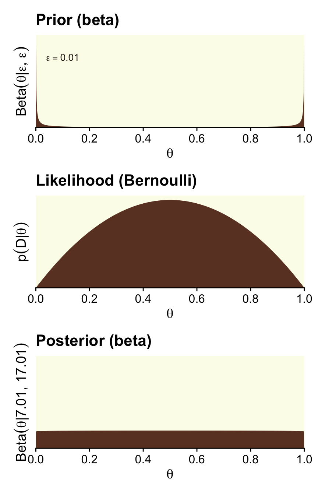
That is one flat posterior! Here are the shape parameters and the HDIs.
(alpha <- z + epsilon)[1] 1.01(beta <- n - z + epsilon)[1] 1.01hdi_of_icdf(name = qbeta,
shape1 = alpha,
shape2 = beta) |>
round(digits = 3) ll ul
0.026 0.974 How do we compute the BF?
theta <- 0.5
a <- epsilon
b <- epsilon
# pD_{null} pD_{alternative}
(theta ^ z * (1 - theta) ^ (n - z)) / (beta(z + a, n - z + b) / beta(a, b))[1] 51Just like in the text, “the Bayes’ factor is \(51.0\) in favor of the null hypothesis” (p. 347)!
Here are the steps to make the right column of Figure 12.4, which is based on stronger data and a flat \(\operatorname{Beta}(1, 1)\) prior.
# We need these to compute the likelihood
n <- 14; z <- 7
d <- tibble(theta = seq(from = 0, to = 1, length.out = 1e3)) |>
mutate(prior = dbeta(x = theta, shape1 = alpha, shape2 = beta),
likelihood = dbern(x = theta, z = z, n = n)) |>
# No need to `slice(2:999)` this time
mutate(posterior = likelihood * prior / sum(likelihood * prior))
p1 <- d |>
ggplot(aes(x = theta, y = prior)) +
geom_area(fill = oa[4]) +
labs(y = expression("Beta"*(theta*"|"*1*", "*1)),
title = "Prior (beta)") +
coord_cartesian(ylim = c(0, 3.5))
p2 <- d |>
ggplot(aes(x = theta, y = likelihood)) +
geom_area(fill = oa[4]) +
labs(y = expression(p(D*"|"*theta)),
title = "Likelihood (Bernoulli)")
p3 <- d |>
ggplot(aes(x = theta, y = posterior)) +
geom_area(fill = oa[4]) +
labs(y = expression("Beta"*(theta*"|"*8*", "*8)),
title = "Posterior (beta)") +
coord_cartesian(ylim = c(0, 0.0035))
(p1 / p2 / p3) &
scale_x_continuous(expression(theta), breaks = 0:5 / 5,
expand = expansion(mult = 0), limits = c(0, 1)) &
scale_y_continuous(breaks = NULL, expand = expansion(mult = c(0, 0.05)))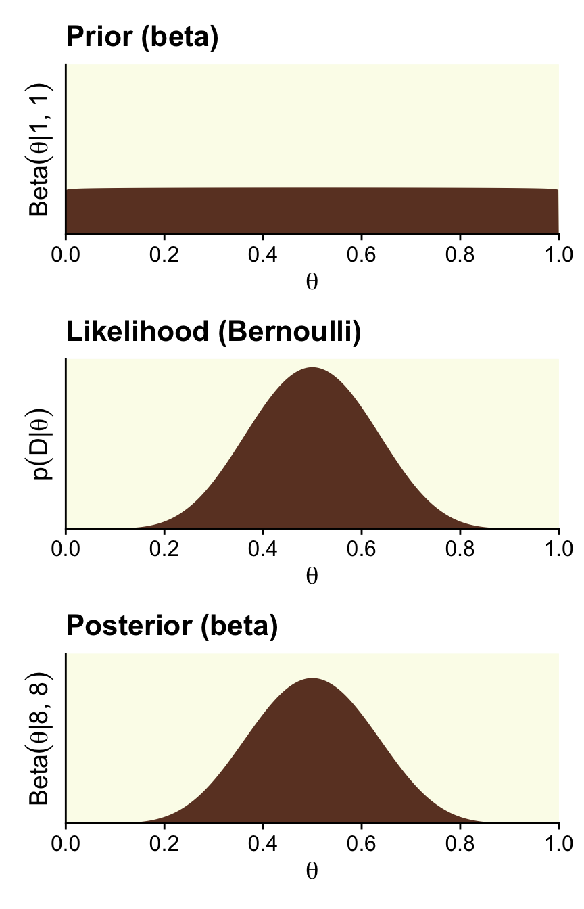
Here are the updated shape parameters and the HDIs.
epsilon <- 1
(alpha <- z + epsilon)[1] 8(beta <- n - z + epsilon)[1] 8hdi_of_icdf(name = qbeta,
shape1 = alpha,
shape2 = beta) |>
round(digits = 3) ll ul
0.266 0.734 Those HDIs are still pretty wide, but much less so than before. Let’s compute the BF.
a <- 1
b <- 1
# pD_{null} pD_{alternative}
(theta ^ z * (1 - theta) ^ (n - z)) / (beta(z + a, n - z + b) / beta(a, b))[1] 3.14209A BF of 3.14 in favor of the null is lackluster evidence. And happily so given the breadth of the HDIs.
Kruschke discussed how we’d need \(z = 1{,}200\) and \(N = 2{,}400\) before the posterior HDIs would fit within a narrow ROPE like .48 and .52. Here’s what that would look like based on the priors from Figure 12.4.
epsilon <- 0.01
z <- 1200
n <- 2400
alpha <- z + epsilon
beta <- n - z + epsilon
# The Haldane-based plot
p1 <- d |>
ggplot(aes(x = theta, y = dbeta(theta, shape1 = alpha, shape2 = beta))) +
geom_rect(xmin = 0.48, xmax = 0.52,
ymin = -Inf, ymax = Inf,
color = "transparent", fill = oa[2]) +
geom_area(fill = oa[4]) +
annotate(geom = "text", x = 0.05, y = 35,
label = expression(epsilon == 0.01), size = 3.5) +
ggtitle("This posterior used the Haldane prior.")
# Redefine the beta parameters
alpha <- z + 1
beta <- n - z + 1
# The Beta(1, 1)-based plot
p2 <- d |>
ggplot(aes(x = theta, y = dbeta(theta, shape1 = alpha, shape2 = beta))) +
geom_rect(xmin = 0.48, xmax = 0.52,
ymin = -Inf, ymax = Inf,
color = "transparent", fill = oa[2]) +
geom_area(fill = oa[4]) +
ggtitle("This time we used the flat Beta(1, 1).")
(p1 / p2) &
scale_x_continuous(expression(theta), breaks = 0:5 / 5,
expand = expansion(mult = 0), limits = c(0, 1)) &
scale_y_continuous(NULL, breaks = NULL, expand = expansion(mult = c(0, 0.05)))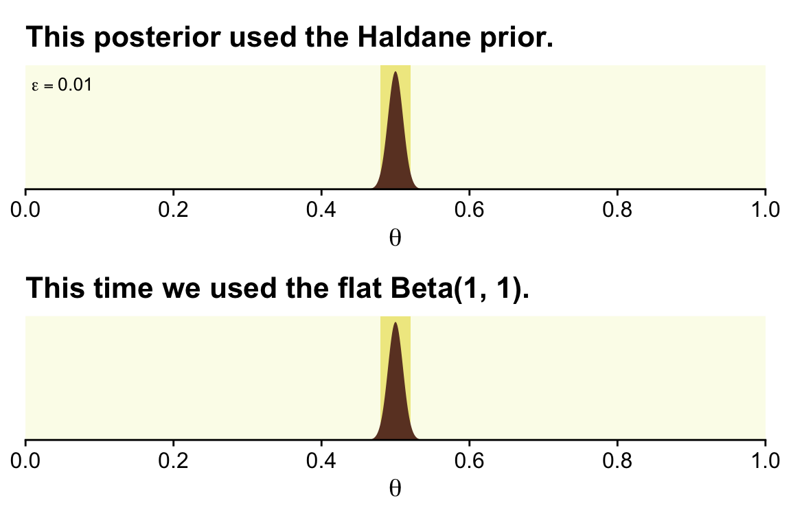
There is no way around this inconvenient statistical reality: high precision demands a large sample size (and a measurement device with minimal possible noise). But when we are trying to accept a specific value of \(\theta\), is seems logically appropriate that we should have a reasonably precise estimate indicating that specific value. (p. 348)
12.2.2 Are different groups equal or not?
Researchers often want to ask the question, Are the groups different or not?
As a concrete example, suppose we conduct an experiment about the effect of background music on the ability to remember. As a simple test of memory, each person tries to memorize the same list of \(20\) words (such as “chair,” “shark,” “radio,” etc.). They see each word for a specific time, and then, after a brief retention interval, recall as many words as they can. (p. 348)
If you look in Kruschke’s OneOddGroupModelComp2E.R file, you can get his simulation code. Here we use a dramatically simplified version. This attempt does not exactly reproduce what his script did, but it gets it in spirit.
# For each subject, specify the condition they were in,
# the number of trials they experienced, and the number correct
n_g <- 20 # Number of subjects per group
n_t <- 20 # Number of trials per subject
levels <- c("Das Kruschke", "Mozart", "Bach", "Beethoven")
set.seed(12)
my_data <- tibble(condition = factor(levels, levels = levels),
group_means = c(0.40, 0.50, 0.51, 0.52)) |>
expand_grid(row = 1:20) |>
mutate(id = 1:80,
n_g = n_g,
n_t = n_t) |>
mutate(n_recalled = rbinom(n_g, n_t, group_means))
head(my_data)# A tibble: 6 × 7
condition group_means row id n_g n_t n_recalled
<fct> <dbl> <int> <int> <dbl> <dbl> <int>
1 Das Kruschke 0.4 1 1 20 20 5
2 Das Kruschke 0.4 2 2 20 20 10
3 Das Kruschke 0.4 3 3 20 20 11
4 Das Kruschke 0.4 4 4 20 20 7
5 Das Kruschke 0.4 5 5 20 20 6
6 Das Kruschke 0.4 6 6 20 20 4Here are the means for n_recalled, by condition.
my_data |>
group_by(condition) |>
summarise(mean_n_recalled = mean(n_recalled))# A tibble: 4 × 2
condition mean_n_recalled
<fct> <dbl>
1 Das Kruschke 7.05
2 Mozart 10.2
3 Bach 10.1
4 Beethoven 10.0 12.2.2.1 Model specification in JAGS brms
Recall that although brms does accommodate models based on the Bernoulli likelihood, it doesn’t do so when the data are aggregated. With our aggregate Bernoulli data, we’ll have to use the conventional binomial likelihood, instead. We’ll compute two models. Our full model will be
\[ \begin{align*} \text{n-recalled}_{ij} & \sim \operatorname{Binomial}(n = 20, \theta_{j}), \text{where} \\ \operatorname{logit}(\theta_j) & = \beta_{0_j}. \end{align*} \]
In our equation, \(\beta_{0_j}\) is the group-specific intercept within the logistic regression model. We’ll use the \(N(0, 1.5)\) prior for the intercept. Though it appears strongly regularizing in the log-odds space, it’s quite flat on the \(\theta\) space. If we wanted to be more conservative in the \(\theta\) space, we might use something more like \(N(0, 1)\).
fit12.1 <- brm(
data = my_data,
family = binomial,
n_recalled | trials(20) ~ 0 + condition,
prior(normal(0, 1.5), class = b),
iter = 3000, warmup = 1000, cores = 4, chains = 4,
seed = 12,
file = "fits/fit12.01")Here’s the summary for the full model.
print(fit12.1) Family: binomial
Links: mu = logit
Formula: n_recalled | trials(20) ~ 0 + condition
Data: my_data (Number of observations: 80)
Draws: 4 chains, each with iter = 3000; warmup = 1000; thin = 1;
total post-warmup draws = 8000
Regression Coefficients:
Estimate Est.Error l-95% CI u-95% CI Rhat Bulk_ESS Tail_ESS
conditionDasKruschke -0.61 0.11 -0.82 -0.40 1.00 9053 5792
conditionMozart 0.05 0.10 -0.15 0.25 1.00 10155 6269
conditionBach 0.02 0.10 -0.17 0.22 1.00 8930 6199
conditionBeethoven 0.01 0.10 -0.19 0.21 1.00 9460 6197
Draws were sampled using sampling(NUTS). For each parameter, Bulk_ESS
and Tail_ESS are effective sample size measures, and Rhat is the potential
scale reduction factor on split chains (at convergence, Rhat = 1).Do keep in mind that our results will differ from Kruschke’s because of two factors. First, we simulated slightly different data. In the limit, I suspect our data simulation approaches would converge. But we’re far from the limit. Second, we used a different likelihood to model the data, which resulted in slightly different priors. Yet even with those substantial limitations, our results are pretty close.
To make the top portion of Figure 12.5, we’ll need to extract the condition-specific parameters. For that, we’ll employ fixef() and then wrangle a bit.
post <- fixef(fit12.1, summary = FALSE) |>
as_tibble() |>
transmute(theta_1 = conditionDasKruschke,
theta_2 = conditionMozart,
theta_3 = conditionBach,
theta_4 = conditionBeethoven) |>
mutate_all(.funs = plogis) |>
transmute(`theta[1]-theta[2]` = theta_1 - theta_2,
`theta[1]-theta[3]` = theta_1 - theta_3,
`theta[1]-theta[4]` = theta_1 - theta_4,
`theta[2]-theta[3]` = theta_2 - theta_3,
`theta[2]-theta[4]` = theta_2 - theta_4,
`theta[3]-theta[4]` = theta_3 - theta_4)
glimpse(post)Rows: 8,000
Columns: 6
$ `theta[1]-theta[2]` <dbl> -0.1941254, -0.2167991, -0.1036802, -0.1450903, -0.1193729, -0.1795252, -0.1584881, -0.1716248, -0.1…
$ `theta[1]-theta[3]` <dbl> -0.17482705, -0.17011223, -0.14217828, -0.13444544, -0.11290800, -0.13539687, -0.16823076, -0.168267…
$ `theta[1]-theta[4]` <dbl> -0.19940362, -0.15797135, -0.14322981, -0.13723256, -0.16100144, -0.16107042, -0.19395490, -0.154511…
$ `theta[2]-theta[3]` <dbl> 0.019298377, 0.046686893, -0.038498069, 0.010644886, 0.006464926, 0.044128324, -0.009742618, 0.00335…
$ `theta[2]-theta[4]` <dbl> -0.005278188, 0.058827775, -0.039549602, 0.007857766, -0.041628507, 0.018454781, -0.035466762, 0.017…
$ `theta[3]-theta[4]` <dbl> -0.0245765641, 0.0121408820, -0.0010515330, -0.0027871201, -0.0480934330, -0.0256735431, -0.02572414…Now we have the wrangled data, we’re ready to convert them to the long format and plot the top of Figure 12.5.
post |>
pivot_longer(cols = everything()) |>
ggplot(aes(x = value)) +
geom_vline(xintercept = 0, color = oa[2]) +
stat_histinterval(point_interval = mode_hdi, .width = 0.95,
breaks = 30, color = oa[3], fill = oa[4],
normalize = "panels") +
scale_y_continuous(NULL, breaks = NULL) +
coord_cartesian(xlim = c(-0.25, 0.25)) +
facet_wrap(~ name, labeller = label_parsed)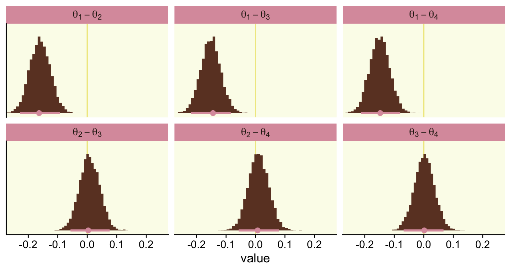
Also, do note we’re working with the \(\theta\) parameters in our aggregated binomial models, rather than \(\omega\)’s.
Here’s how you’d get the posterior mean and HDI summaries.
post |>
pivot_longer(cols = everything()) |>
group_by(name) |>
mode_hdi(value) |>
mutate_if(is.double, .funs = round, digits = 3)# A tibble: 6 × 7
name value .lower .upper .width .point .interval
<chr> <dbl> <dbl> <dbl> <dbl> <chr> <chr>
1 theta[1]-theta[2] -0.163 -0.228 -0.092 0.95 mode hdi
2 theta[1]-theta[3] -0.144 -0.219 -0.084 0.95 mode hdi
3 theta[1]-theta[4] -0.148 -0.213 -0.08 0.95 mode hdi
4 theta[2]-theta[3] 0.004 -0.057 0.076 0.95 mode hdi
5 theta[2]-theta[4] 0.007 -0.057 0.08 0.95 mode hdi
6 theta[3]-theta[4] 0.002 -0.068 0.067 0.95 mode hdi If we wanted to know what proportion of the difference distributions were greater than zero, we could do something like this.
post |>
pivot_longer(cols = everything()) |>
group_by(name) |>
summarise(p = mean(value > 0)) |>
mutate_if(is.double, .funs = round, digits = 3)# A tibble: 6 × 2
name p
<chr> <dbl>
1 theta[1]-theta[2] 0
2 theta[1]-theta[3] 0
3 theta[1]-theta[4] 0
4 theta[2]-theta[3] 0.588
5 theta[2]-theta[4] 0.615
6 theta[3]-theta[4] 0.528I got this idea from the great Tristan Mahr, who pointed out that conditional tests like value > 0 compute a vector of TRUE and FALSE values. By nesting that within mean(), you end up with the proportion of those values that are TRUE.
With our Stan/brms method, we don’t have an analogue to the lower portion of Figure 12.5 because we are not fitting the full and restricted models within a single run. Thus, there’s no plot to show the chains traversing from \(M_\text{full}\) to \(M_\text{restricted}\). Rather, our fit12.1 was just of \(M_\text{full}\). Now we’ll fit \(M_\text{restricted}\), which we’ll save as fit12.2.
fit12.2 <- brm(
data = my_data,
family = binomial,
n_recalled | trials(20) ~ 1,
prior(normal(0, 1.5), class = Intercept),
iter = 3000, warmup = 1000, cores = 4, chains = 4,
seed = 12,
file = "fits/fit12.02")Here we’ll compare the two models with the LOO.
fit12.1 <- add_criterion(fit12.1, criterion = "loo")
fit12.2 <- add_criterion(fit12.2, criterion = "loo")
loo_compare(fit12.1, fit12.2) |>
print(simplify = FALSE) elpd_diff se_diff elpd_loo se_elpd_loo p_loo se_p_loo looic se_looic
fit12.1 0.0 0.0 -172.4 4.4 3.3 0.4 344.9 8.8
fit12.2 -11.9 5.5 -184.4 6.9 1.1 0.2 368.7 13.8 The LOO comparison suggests fit12.1, the full model with the condition-specific intercepts, is an improvement over the restricted one-intercept-only model. We can also compare the models with their weights via the model_weights() function. Here we’ll use weights = "loo" criterion.
model_weights(fit12.1, fit12.2, weights = "loo") |>
round(digits = 3)fit12.1 fit12.2
1 0 Recall that within a given comparison, the weights sum to 1, with better fitting models tending closer to 1 than the other(s). In this case, almost all the weight went to the \(M_\text{full}\), fit12.1.
12.2.2.2 Bonus: Hypothesis testing in brms
Disclaimer: I am not a fan of hypothesis testing within the Bayesian framework. Outside of pedagogical material like this, I do not use these methods. However, it’d seem negligent not to at least mention the convenience function designed for that purpose in brms: the hypothesis() function. From the hypothesis.brmsfit section in the brms reference manual (Bürkner, 2022, p. 109) we read:
Among others,
hypothesiscomputes an evidence ratio (Evid.Ratio) for each hypothesis. For a one-sided hypothesis, this is just the posterior probability (Post.Prob) under the hypothesis against its alternative. That is, when the hypothesis is of the forma > b, the evidence ratio is the ratio of the posterior probability ofa > band the posterior probability ofa < b. In this example, values greater than one indicate that the evidence in favor ofa > bis larger than evidence in favor ofa < b. For an two-sided (point) hypothesis, the evidence ratio is a Bayes factor between the hypothesis and its alternative computed via the Savage-Dickey density ratio method. That is the posterior density at the point of interest divided by the prior density at that point. Values greater than one indicate that evidence in favor of the point hypothesis has increased after seeing the data. In order to calculate this Bayes factor, all parameters related to the hypothesis must have proper priors and argumentsample_priorof functionbrmmust be set to"yes". OtherwiseEvid.Ratio(andPost.Prob) will beNA. Please note that, for technical reasons, we cannot sample from priors of certain parameters classes. Most notably, these include overall intercept parameters (prior class"Intercept") as well as group-level coefficients. When interpreting Bayes factors, make sure that your priors are reasonable and carefully chosen, as the result will depend heavily on the priors. In particular, avoid using default priors.
Following the a < b format, let’s say we wanted to test the hypothesis \(\theta_\text{Das Kruschke} < \theta_\text{Bach}\), based on fit12.1. If we convert the relevant parameters from the log-odds metric to the probability scale with plogis(), we can specify that hypothesis as a string and place it into the hypothesis() function.
hypothesis(fit12.1,
"plogis(conditionDasKruschke) < plogis(conditionBach)")Hypothesis Tests for class b:
Hypothesis Estimate Est.Error CI.Lower CI.Upper Evid.Ratio Post.Prob Star
1 (plogis(condition... < 0 -0.15 0.03 -0.21 -0.09 Inf 1 *
---
'CI': 90%-CI for one-sided and 95%-CI for two-sided hypotheses.
'*': For one-sided hypotheses, the posterior probability exceeds 95%;
for two-sided hypotheses, the value tested against lies outside the 95%-CI.
Posterior probabilities of point hypotheses assume equal prior probabilities.In the Estimate through CI.Upper columns, we got the typical brms summary statistics for model parameters. Those CIs, recall, are ETIs rather than HDIs. To interpret the rest, we read further from the brms reference manual that
The
Evid.Ratiomay sometimes be0orInfimplying very small or large evidence, respectively, in favor of the tested hypothesis. For one-sided hypotheses pairs, this basically means that all posterior samples are on the same side of the value dividing the two hypotheses. In that sense, instead of0orInf, you may rather read it asEvid.Ratiosmaller1 / Sor greaterS, respectively, whereSdenotes the number of posterior samples used in the computations.The argument alpha specifies the size of the credible interval (i.e., Bayesian confidence interval). For instance, if we tested a two-sided hypothesis and set
alpha = 0.05(\(5\%\)) an, the credible interval will contain1 -alpha = 0.95(\(95\%\)) of the posterior values. Hence,alpha * 100\(\%\) of the posterior values will lie foutside of the credible interval. Although this allows testing of hypotheses in a similar manner as in the frequentist null-hypothesis testing framework, we strongly argue against using arbitrary cutoffs (e.g.,p < .05) to determine the ‘existence’ of an effect.
In this case, the entire posterior distribution (i.e., all the iterations of the chains) was below zero and we ended up with an Evid.Ratio = Inf. Our Bayes factor blew up. If we’d like to test a point null hypothesis, we might reformat the equation to \(\theta_\text{Das Kruschke} = \theta_\text{Bach}\).
hypothesis(fit12.1,
"plogis(conditionDasKruschke) = plogis(conditionBach)")Hypothesis Tests for class b:
Hypothesis Estimate Est.Error CI.Lower CI.Upper Evid.Ratio Post.Prob Star
1 (plogis(condition... = 0 -0.15 0.03 -0.22 -0.08 NA NA *
---
'CI': 90%-CI for one-sided and 95%-CI for two-sided hypotheses.
'*': For one-sided hypotheses, the posterior probability exceeds 95%;
for two-sided hypotheses, the value tested against lies outside the 95%-CI.
Posterior probabilities of point hypotheses assume equal prior probabilities.Here we no longer get summary information in the Evid.Ratio and Post.Prob columns. But we do get that posterior summary information and we also get that little * symbol in the Star column, which was based on the brms default alpha = 0.05.
Let’s see what happens when we test a different kind of directional hypothesis, \(\theta_\text{Motzart} - \theta_\text{Bach} > 0\).
hypothesis(fit12.1,
"plogis(conditionMozart) - plogis(conditionBach) > 0")Hypothesis Tests for class b:
Hypothesis Estimate Est.Error CI.Lower CI.Upper Evid.Ratio Post.Prob Star
1 (plogis(condition... > 0 0.01 0.03 -0.05 0.06 1.42 0.59
---
'CI': 90%-CI for one-sided and 95%-CI for two-sided hypotheses.
'*': For one-sided hypotheses, the posterior probability exceeds 95%;
for two-sided hypotheses, the value tested against lies outside the 95%-CI.
Posterior probabilities of point hypotheses assume equal prior probabilities.Here we get an underwhelming BF of 1.49. The posterior probability that hypothesis versus its logical alternative is .59. Notice we no longer have a * in the Star column.
One last thing about the hypothesis() function: you can feed it into the plot() function to get a quick plot of the results. Here’s what that looks like from our last example.
hypothesis(fit12.1,
"plogis(conditionMozart) - plogis(conditionBach) > 0") |>
plot()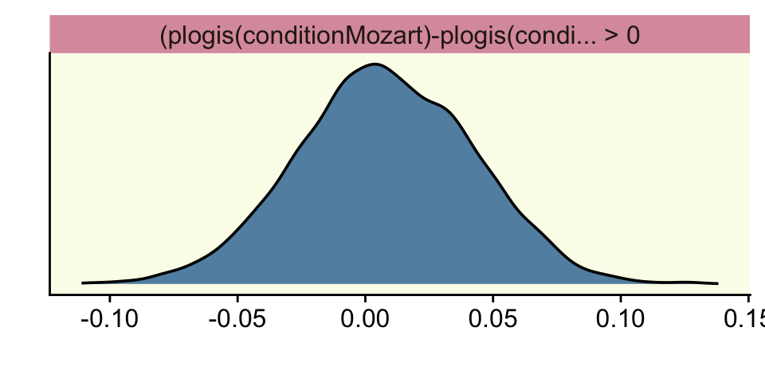
We won’t use the hypothesis() much in this ebook. But if you’re interested, there are other tricky ways to make good use of it. To learn more, check out Vourre’s handy blog post, How to calculate contrasts from a fitted brms model.
12.3 Relations of parameter estimation and model comparison
Back to the text, Kruschke wrapped up this section by explaining
the model comparison focuses on the null value and whether its local probability increases from prior to posterior. The parameter estimation considers the entire posterior distribution, including the uncertainty (i.e., HDI) of the parameter estimate relative to the ROPE.
The derivation of the Bayes’ factor by considering the null value in parameter estimation is known as the Savage-Dickey method. A lucid explanation is provided by Wagenmakers, Lodewyckx, Kuriyal, and Grasman (2010), who also provide some historical references and applications to MCMC analysis of hierarchical models. (pp. 353–354)
Hey, we just read about that Savage-Dickey method when learning about the brms::hypothesis() function!
12.4 Estimation and model comparison?
I’ll leave this for you to decide. Here’s Kruschke: “As mentioned above, neither method for null value assessment (parameter estimation or model comparison) is uniquely ‘correct.’ The two approaches merely pose the question of the null value in different ways” (p. 354). If you’d like to read more on comparisons between the HDI, ROPE, and Bayes factor methods, check out the (2021) simulation study by Linde and colleagues or the follow-up (2021) preprint by Campbell and Gustafson.
Session info
sessionInfo()R version 4.5.1 (2025-06-13)
Platform: aarch64-apple-darwin20
Running under: macOS Ventura 13.4
Matrix products: default
BLAS: /Library/Frameworks/R.framework/Versions/4.5-arm64/Resources/lib/libRblas.0.dylib
LAPACK: /Library/Frameworks/R.framework/Versions/4.5-arm64/Resources/lib/libRlapack.dylib; LAPACK version 3.12.1
locale:
[1] en_US.UTF-8/en_US.UTF-8/en_US.UTF-8/C/en_US.UTF-8/en_US.UTF-8
time zone: America/Chicago
tzcode source: internal
attached base packages:
[1] stats graphics grDevices utils datasets methods base
other attached packages:
[1] patchwork_1.3.2 tidybayes_3.0.7 brms_2.23.0 Rcpp_1.1.0 fishualize_0.2.3 cowplot_1.2.0 lubridate_1.9.4
[8] forcats_1.0.1 stringr_1.6.0 dplyr_1.1.4 purrr_1.2.0 readr_2.1.5 tidyr_1.3.1 tibble_3.3.0
[15] ggplot2_4.0.1 tidyverse_2.0.0
loaded via a namespace (and not attached):
[1] RColorBrewer_1.1-3 tensorA_0.36.2.1 rstudioapi_0.17.1 jsonlite_2.0.0 magrittr_2.0.4
[6] TH.data_1.1-4 estimability_1.5.1 farver_2.1.2 nloptr_2.2.1 rmarkdown_2.30
[11] vctrs_0.6.5 minqa_1.2.8 base64enc_0.1-3 htmltools_0.5.8.1 distributional_0.5.0
[16] curl_7.0.0 StanHeaders_2.32.10 htmlwidgets_1.6.4 plyr_1.8.9 sandwich_3.1-1
[21] emmeans_1.11.2-8 zoo_1.8-14 igraph_2.2.0 mime_0.13 lifecycle_1.0.4
[26] pkgconfig_2.0.3 colourpicker_1.3.0 Matrix_1.7-3 R6_2.6.1 fastmap_1.2.0
[31] rbibutils_2.3 shiny_1.11.1 digest_0.6.37 colorspace_2.1-2 crosstalk_1.2.2
[36] labeling_0.4.3 timechange_0.3.0 httr_1.4.7 abind_1.4-8 compiler_4.5.1
[41] bit64_4.6.0-1 withr_3.0.2 S7_0.2.1 backports_1.5.0 inline_0.3.21
[46] shinystan_2.6.0 QuickJSR_1.8.1 pkgbuild_1.4.8 MASS_7.3-65 gtools_3.9.5
[51] loo_2.8.0 tools_4.5.1 httpuv_1.6.16 threejs_0.3.4 glue_1.8.0
[56] nlme_3.1-168 promises_1.3.3 grid_4.5.1 checkmate_2.3.3 reshape2_1.4.4
[61] generics_0.1.4 gtable_0.3.6 tzdb_0.5.0 hms_1.1.4 utf8_1.2.6
[66] pillar_1.11.1 ggdist_3.3.3 markdown_2.0 vroom_1.6.6 posterior_1.6.1
[71] later_1.4.4 splines_4.5.1 lattice_0.22-7 survival_3.8-3 bit_4.6.0
[76] tidyselect_1.2.1 miniUI_0.1.2 knitr_1.50 reformulas_0.4.1 arrayhelpers_1.1-0
[81] gridExtra_2.3 V8_8.0.1 stats4_4.5.1 xfun_0.53 rstanarm_2.32.2
[86] bridgesampling_1.1-2 matrixStats_1.5.0 DT_0.34.0 rstan_2.32.7 stringi_1.8.7
[91] yaml_2.3.10 boot_1.3-31 evaluate_1.0.5 codetools_0.2-20 cli_3.6.5
[96] RcppParallel_5.1.11-1 shinythemes_1.2.0 xtable_1.8-4 Rdpack_2.6.4 coda_0.19-4.1
[101] png_0.1-8 svUnit_1.0.8 parallel_4.5.1 rstantools_2.5.0 dygraphs_1.1.1.6
[106] bayesplot_1.14.0 Brobdingnag_1.2-9 lme4_1.1-37 mvtnorm_1.3-3 scales_1.4.0
[111] xts_0.14.1 crayon_1.5.3 rlang_1.1.6 multcomp_1.4-29 shinyjs_2.1.0
Comments